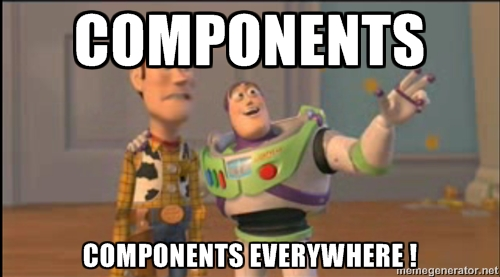
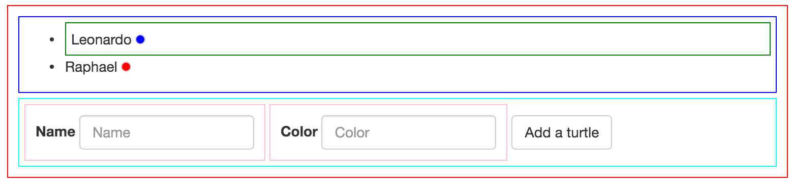
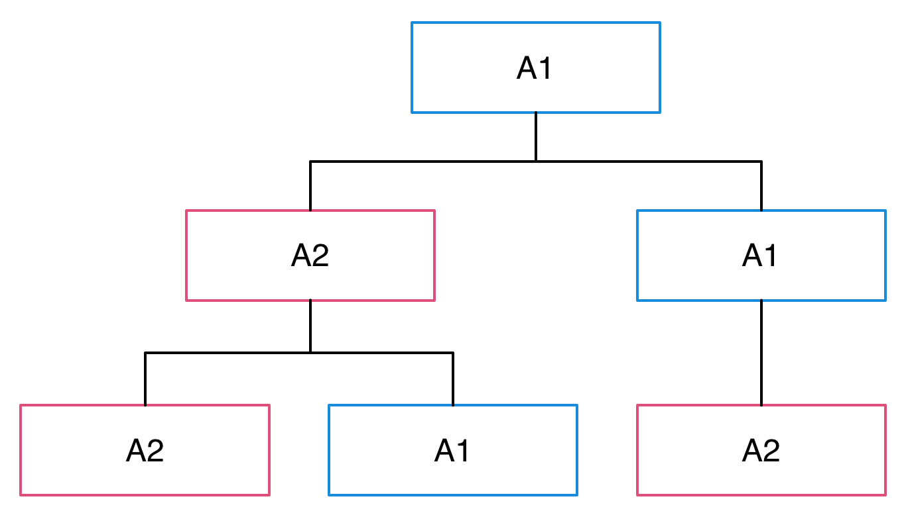

De Angular 1
à Angular 2
Qui suis-je ?
- Benoît Lemoine
- Développeur FullStack chez Captain Dash
(Scala / TypeScript) - @benoit_lemoine
Un peu d'histoire
2009
2009
- Sortie d'Angular
- Un framework Web
- Open source - License MIT
~2011
- Angular est sponsorisé par Google
- Angular est à la mode
Septembre 2014
- Annonce d'Angular 2
- N'a plus grand chose à voir avec Angular 1
- Pas de chemin de migration prévu
2015
- Année du Angular Bashing
- Chemin de migration prévu
2016
- Sortie d'Angular 2 ?
Angular 1 VS Angular 2
| Angular 1 | Angular 2 |
|---|---|
| JavaScript | TypeScript |
| Orienté MV* | Orienté composant |
| Double databinding | databinding presque unidrectionnel |
Angular 2 - Exemple
@Component({
selector: 'my-app',
template:`
<h1>{{title}}</h1>
<input [(ngModel)]="hero.name" placeholder="name">
`
})
export class AppComponent {
public title: string = 'Tour of Heroes';
public hero: Hero = {
id: 1,
name: 'Windstorm'
};
}
Migrer progressivement
d'Angular 1 à Angular 2
Étape 1
Suivre les bonnes pratiques
Réorganiser son code
Organisation en modules techniques fonctionnels
Service
- Éviter
factory - Utiliser
service
TurtlesService.$inject = ['$q']
function TurtlesService($q) {
var self = this;
var turtles = [{name:'Leonardo', color:'blue'}]
self.findAll = function findAll() {
return $q.resolve(turtles)
}
}
angular.module('turtles.app').service('TurtlesService', TurtlesService);
Controller
- Bannir
$scope - Utiliser
controllerAs
TurtlesCtrl.$inject = ['TurtlesService'];
function TurtlesCtrl(TurtlesService) {
var $ctrl = this;
$ctrl.turtles = [];
TurtlesService.findAll().then(function (turtles) {
$ctrl.turtles = turtles
});
}
controllerAs
angular.module('turtles.app').config(['$routeProvider', function($routeProvider) {
$routeProvider.when('/turtles', {
templateUrl: 'src/turtles/turtles.html',
controller: 'TurtlesCtrl',
controllerAs: '$ctrl'
})
}]);
controllerAs
<ul>
<li ng-repeat="turtle in $ctrl.turtles track by turtle.name">
<span class="turtle-name">{{turtle.name}}</span>
<span class="round"
ng-style="{'background-color':turtle.color}"></span>
</li>
</ul>
Étape 2
component
var bootstrapInput = {
bindings: {
label: '@',
model: '<',
modelChange: '&'
},
controller: BootstrapController,
template: '<div class="form-group">' +
'<label>{{$ctrl.label}}</label>' +
'<input type="text" class="form-control" ' +
' placeholder="{{$ctrl.label}}" ' +
' ng-model="$ctrl.modelProxy" /> ' +
'</div>'
}
component
function BootstrapController() {
}
Object.defineProperty(BootstrapController.prototype, "modelProxy", {
get: function () {
return this.model;
},
set: function (newModel) {
this.modelChange({ model: newModel });
}
});
component
angular.module('my.app').component('bootstrapInput', bootstrapInput)
<bootstrap-input
label="Name"
model="myController.name"
modelChange="myController.name = model"
></bootstrap-input>
Tout est composant
Étape 2.5
Routing
- Routeur orienté composant
- récupérable via NPM
@angular/router
Routing - exemple
angular.module('app', ['ngComponentRouter', 'turtles.app'])
.component('app', {
template: '<ng-outlet></ng-outlet>',
$routeConfig: [
{
path: '/turtles/...',
name: 'Turtles',
component: 'turtles',
useAsDefault: true
}
]
})
.value('$routerRootComponent', 'app')
<app></app>
Étape 3
Système de module
Dans Angular 1
ES6 Syntax
//MyMath.ts
export default function add(a, b) {
return a + b;
}
export function multiply(a, b) {
return a * b;
}
import myAdd from 'MyMath';
import {multiply} from 'MyMath';
myAdd(1, 2) //3
multiply(2, 3) //6
SystemJs
- Module Loader
- Support AMD, CommonJS, ES6
- Défaut sur Angular 2
- Future Standard peut être
JSPM
- Un autre package manager
- Depuis npm, github, bitbucket, etc.
- Intégration forte avec SystemJs
TypeScript
TypeScript
- Langage transpilant vers JavaScript
- Made in MicroSoft en 2012
- Open Source - Apache V2
- Sur-ensemble d'EcmaScript 2015/2016
- Statiquement typé
- Typage structurel et graduel
TypeScript - Exemple
interface User {
firstName:string
lastName:string
}
class Room {
constructor(private users:Array<User> = []) {}
addUser(user:User) {
this.users.push(user);
}
}
const room = new Room();
room.addUser({firstName:'Georges', lastName:'Abitbol'});
TypeScript
- Migration et apprentissage simples
- Completion dans l'IDE
- Refactoring simplifié
- Types servent de documentation
TypeScript
Support des librairies tierces
par des fichiers d'entetes (.d.ts)
Typings
- Package manager pour les fichiers d'entête TypeScript
/// <reference path="main.d.ts" />
Exemple
npm install systemjs jspm typings typescript
jspm install ts angular npm:@angular/router
typings install jquery angular angular-component-router --save --ambient
System.config({
//...
packages: {
"src": {
"defaultExtension": "ts",
"meta": {
"*.ts": {
"loader": "ts"
}
}
}
},
//...
});
Bootstraping
System.import('src/app')
.then(function() {
return System.import('angular');
})
.then(function(angular) {
angular.bootstrap(document.body, ['app'], {strictDi:true});
})
.catch(function(err) {
console.log('Error: ', err, err.stack);
});
Les types
- Bannir au maximum
any - Typer explicitement les entrées/sorties
- Éviter les appels dynamiques
Les types
export interface Turtle {
name:string
color:string
}
export default class TurtlesService {
public turtles:Array<Turtle> = [{name:'Leonardo', color:'blue'}]
static $inject = ['$q'];
constructor(private $q:ng.IQService) { }
findAll():ng.IPromise<Array<Turtle>> {
return this.$q.resolve(this.turtles)
}
}
Exemple
import {Turtle} from './turtleService'
import TurtlesService from './turtleService';
class TurtlesCtrl {
public turtles:Array<Turtle> = []
static $inject = ['TurtlesService'];
constructor(private TurtlesService:TurtlesService) {
TurtlesService.findAll().then(turtles => this.turtles = turtles)
}
}
Comment remplacer $scope.$watch
class TurtlesCtrl {
public turtles:Array<Turtle> = []
get firstTurtleName():string {
return this.turtles[0] && this.turtles[0].name;
}
set firstTurtleName(firstTurtleName:string) {
if (!this.turtles[0]) {
this.turtles[0] = {name:'', color:''}
}
this.turtles[0].name = firstTurtleName;
}
}
<input ng-model="$ctrl.firstTurtleName" />
Decorators
import _ from 'lodash';
export default function debounce(debounceInMs:number) {
return function (target:Object, propertyKey:string,
descriptor:TypedPropertyDescriptor<any>) {
descriptor.value = _.debounce(descriptor.value, debounceInMs);
return descriptor
}
}
class TurtlesCtrl {
@debounce(300)
search(textToSearch:string) {
//...
}
}
Decorators - Exemples
Ajouter du comportement transverse à des méthodes
- Throttle
- Memoize
- Inject
- etc.
Étape 4
Angular 2 !
Dans Angular 1
Installer Angular 2
jspm install angular2 rxjs reflect-metadataApplication hybride
UpgradeAdapter
- Upgrade des composants et service Angular 1
- Downgrade des composants et service Angular 2
UpgradeAdapter
import {UpgradeAdapter} from 'angular2/upgrade';
const upgradeAdapter = new UpgradeAdapter();
export default upgradeAdapter
System.import('src/app')
.then(function() { return System.import('reflect-metadata'); })
.then(function() { return System.import('src/upgrader'); })
.then(function(upgradeAdapter) {
upgradeAdapter.default.bootstrap(document.body, ['app']);
//angular.bootstrap(document.body, ['app'], {strictDi:true});
})
.catch(function(err) {
console.log('Error: ', err, err.stack);
});
Downgrade
const turtlesShow = {
bindings: {
turtles:'<'
},
template:`<ul>
<li ng-repeat="turtle in $ctrl.turtles track by turtle.name">
<span class="turtle-name">{{turtle.name}}</span>
<span class="round"
ng-style="{'background-color':turtle.color}"></span>
</li>
</ul>`
}
export default turtlesShow;
import 'reflect-metadata';
import {Component} from 'angular2/core';
import {Turtle} from './turtleService'
@Component({
selector:'turtlesShow',
template:`<ul>
<li *ngFor="#turtle of turtles">
<span class="turtle-name">{{turtle.name}}</span>
<span class="round"
[ngStyle]="{'background-color':turtle.color}"></span>
</li>
</ul>`,
inputs: ['turtles']
})
export default class TurtlesShow {
public turtles:Array<Turtle> = [];
}
Downgrade
import angular from 'angular';
import upgradeAdapter from 'upgrader';
angular.module('turtles.app').directive('turtlesShow',
<IDirectiveFactory>upgradeAdapter.downgradeNg2Component(turtlesShow2))
Upgrade
const MyAngular1Directive =
upgradeAdapter.upgradeNg1Component('myAngular1Directive');
@Component({
selector:'MyAngular2Directive',
template:`
<div>
<My-Angular1-Directive my-params="2" />
</div>`,
directives:[MyAngular1Directive]
})
export default class MyAngular2Directive {
};
Ng-Forward
https://github.com/ngUpgraders/ng-forward- Utiliser les décorateurs Angular 2 dans Angular 1
Conclusion
- Suivre les bonnes pratiques angular
- Utiliser un système de module + TypeScript
- Migrer les "feuilles" de votre arbre de composants
- Finir par le routing et le composant top-level
Meta-Conclusion
Faut-il vraiment migrer vers Angular 2 ?
Webography
Questions ?
- @benoit_lemoine
- TODO Adresse des slides
#fromAngular1to2